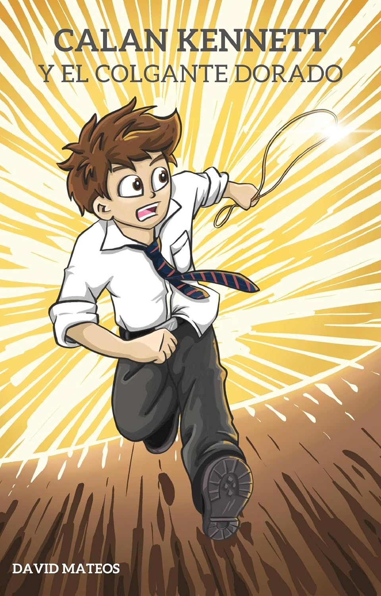
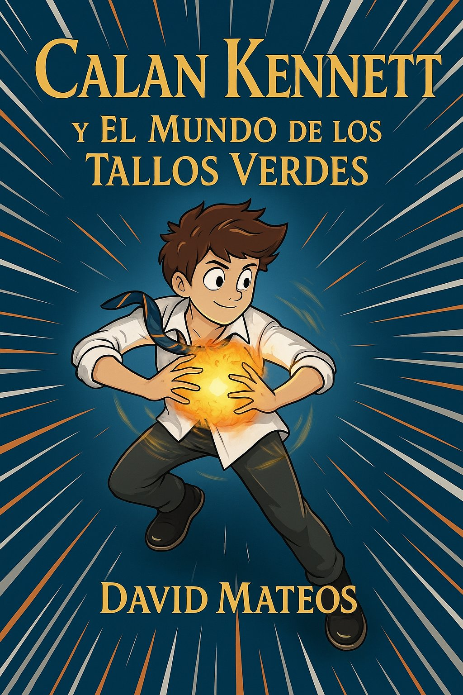

Fantasía · Aventura · A partir de 8 años
Trilogía de fantasía juvenil de David Mateos — todos los libros en orden
Calan Kennett es un chico corriente con un talento extraordinario para inventarse juegos. Junto a sus mejores amigos, Kate y Jim Aldington, descubrirá que uno de esos juegos abre la puerta a un mundo mágico llamado el Stroller, repleto de criaturas increíbles, lugares imposibles y amenazas que pondrán a prueba su valor, su lealtad y su imaginación.
Una trilogía de fantasía y aventura juvenil para lectores a partir de 8 años, con humor, emoción y personajes llenos de vida.

¿Y si el juego de mesa que inventaste cobrara vida de verdad?
Calan Kennett tiene doce años, una imaginación desbordante y dos mejores amigos: Jim y Kate Aldington. Los tres pasan las tardes en el sótano de los Aldington jugando al Stroller, un juego de mesa que ellos mismos han inventado: sin ganadores, sin reglas fijas, solo imaginación y trabajo en equipo.
Pero un día el Stroller deja de ser un juego.
Un misterioso Colgante Dorado arrastra a los tres amigos a un mundo subterráneo asombroso: el Stroller real, un universo habitado por criaturas fantásticas, bacteriums parlantes y un búcho sabio, donde la magia es tan real como el miedo. Un lugar que antaño fue un paraíso de paz y convivencia… hasta que el malvado Cara de Gusano lo sumió en la oscuridad.
Ahora el Colgante Dorado ha desaparecido. Y solo Calan, Jim y Kate pueden recuperarlo.
Una aventura épica de fantasía para lectores de 10 a 14 años, ambientada en el Oxford más misterioso y llena de criaturas únicas, humor, valentía y amistad. Perfecta para fans de las grandes sagas de fantasía juvenil española.
✔ Mundos subterráneos llenos de imaginación ✔ Personajes entrañables con los que cualquier niño se identifica ✔ Una trama de aventura y amistad sin una sola página aburrida ✔ Ideal para lectores de 5.º Primaria a 2.º ESO
Libro 1 de la saga Calan Kennett.
"Un Colgante Dorado, criaturas fantásticas y tres niños que se enfrentan a sus propios miedos."
ISBN: 9798334591967 · Disponible en papel y eBook
Ver ficha Comprar en Amazon
Cara de Gusano ha vuelto. Y esta vez va en serio.
El verano ha terminado. Calan, Jim y Kate regresan a Oxford pensando que lo peor ya ha quedado atrás. El Stroller estaba en paz, Cara de Gusano había desaparecido y el Colgante Dorado estaba a salvo. Pero alguien les esperaba agazapado en Bevington Road: Evan Fussmann sabe que tienen el Colgante, y no está solo.
Cara de Gusano ha resurgido de las Llanuras de los Cráteres más fuerte y furioso que nunca. Y tiene un objetivo claro: encontrar a Calan Kennett.
Mientras tanto, una nueva puerta se abre ante los tres amigos: el Mundo de los Tallos Verdes, un lugar que nadie del Stroller había conseguido explorar y que esconde secretos capaces de cambiar el destino de todos los mundos. Pero llegar allí no será fácil. En el camino les esperan los Osos de los Vientos, las Galerías de Sainsbury y una pérdida que ninguno de los tres olvidará jamás.
El segundo libro de la saga Calan Kennett es más oscuro, más épico y más emocionante que el primero. Para lectores de 10 a 14 años que ya no pueden parar.
✔ El regreso del villano más temido del Stroller ✔ Nuevos mundos, nuevas criaturas y nuevos peligros ✔ Amistad, valentía y los primeros latidos del corazón ✔ Ideal para 5.º Primaria a 2.º ESO
Saga Calan Kennett — Libro 2.
Disponible en eBook Kindle · ISBN papel próximamente
Ver ficha Comprar eBook en AmazonEl tercer y último libro de la trilogía está en preparación. La aventura de Calan en el Stroller llega a su conclusión. Suscríbete para ser el primero en saber cuándo se publica.
Conocer más Avísame cuando salgaLa trilogía tiene una historia continua: los personajes evolucionan y los misterios del Stroller se profundizan libro a libro. El orden de publicación es el orden de lectura:
El Stroller es el mundo mágico al que acceden Calan y sus amigos: un lugar con sus propias reglas, criaturas y geografía. A lo largo de la saga aparecen los jemdin (guardianes de los puentes), los osos de los vientos de Cuna de Tempestades, la enigmática señora Hatton y el fiel perro Doc. El Colgante Dorado, objeto central de la trilogía, concentra un poder que varios intentarán controlar.
La trilogía está pensada para lectores a partir de 8-9 años. El tono es aventurero y accesible, con humor y emoción. Funciona muy bien como lectura compartida entre padres e hijos o en el aula de Primaria.
Sí, en este caso el orden importa. La historia es continua: los personajes y el mundo del Stroller evolucionan de un libro al siguiente.
La saga está planificada como una trilogía. Actualmente hay dos libros publicados. El tercero, Las Galerías de Sainsbury, está en preparación.
El libro 1 está disponible en papel y eBook en Amazon. El libro 2 está disponible en eBook Kindle. Usa los botones de cada ficha para ir directamente a la tienda.
Es fantasía portal: niños del mundo real (Oxford, Inglaterra) que descubren un mundo mágico paralelo. El tono combina aventura clásica con humor y emoción. El foco está en la amistad, el valor y el trabajo en equipo.
¿No quieres perderte la publicación del libro 3?
Suscríbete y recibe novedades